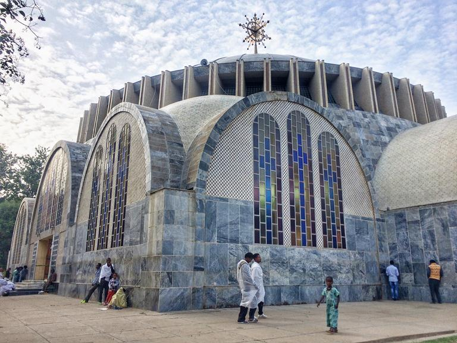
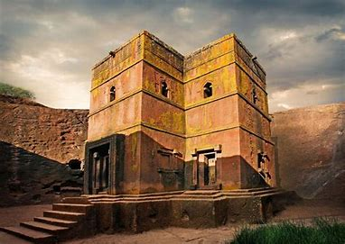
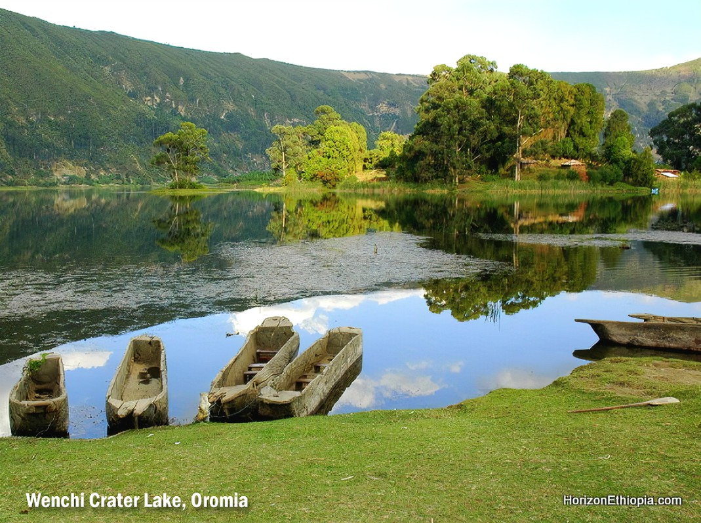

places I traveled

Axum Tsion Mariam Church

Lalibela
Tisabay

Wonchi
I believe that our passions shape who we are, and I love to explore the world around me through a variety of interests. From experiencing the rich cultural and natural beauty of Ethiopia to diving into creative outlets that fuel my imagination, my hobbies bring joy and inspiration to my life. Whether it's listening to Ethiopian Orthodox Mezmur for a sense of peace, watching unrealistic films that captivate my creativity, or enjoy video games, reading fiction, and playing football, each activity plays a unique role in my personal growth. Here, I’ve shared some of my favorite pastimes with you. Dive in and discover the things that inspire and entertain me!
Axum Tsion Mariam Church
Lalibela
Tisabay
Wonchi
As I told you before, I love listening to Ethiopian Orthodox Mezmur. These songs are peaceful and meaningful, and they bring me closer to my faith. They are more than just music—they are special to me. Let me share one of my favorites with you. I hope you enjoy it!
I enjoy watching movies that are imaginative and sometimes unrealistic. One of my favorites is A Quiet Place. It’s a suspenseful, post-apocalyptic movie where humans must live in complete silence to survive because monstrous creatures hunt by sound. The film is unique and tense, with a powerful story about family and survival. If you enjoy movies that make you think and keep you on the edge of your seat, I highly recommend you to watch the trailer in the following video.